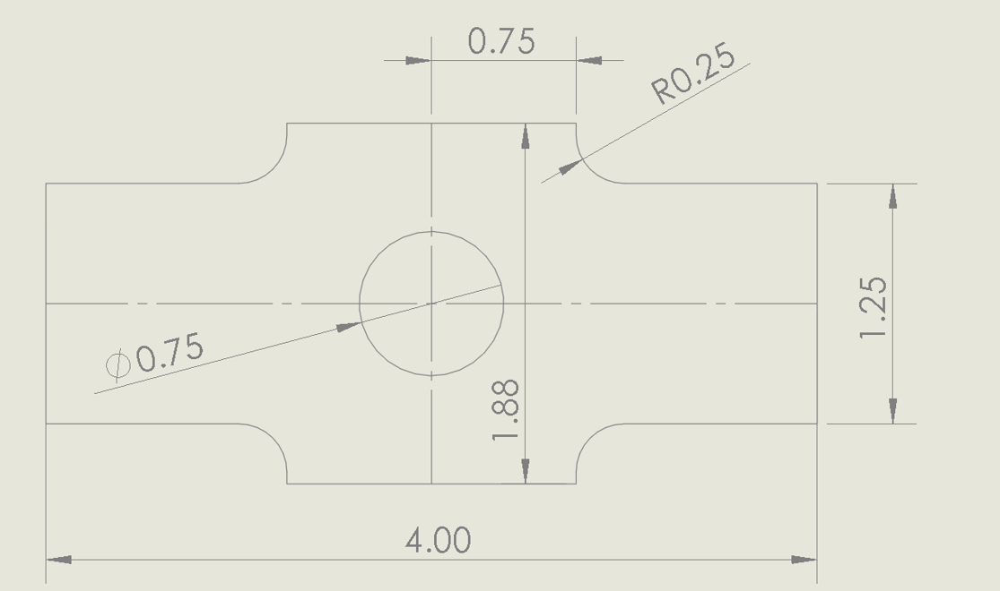
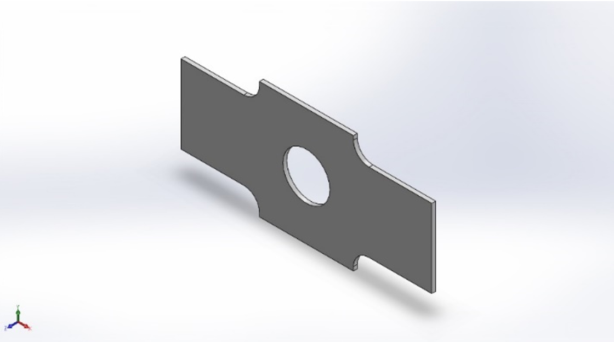
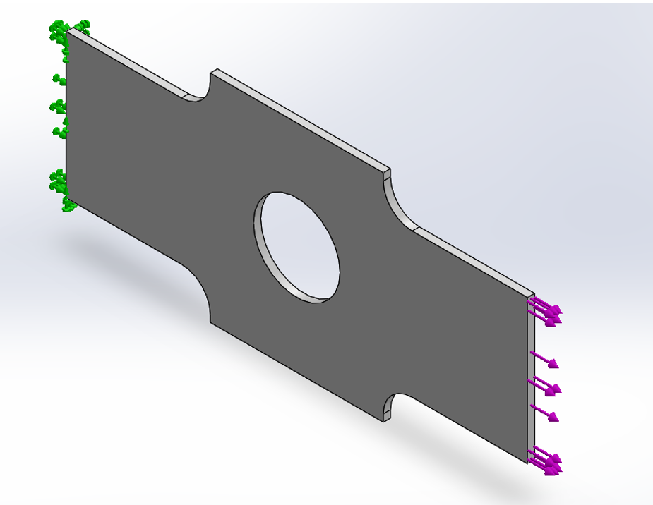
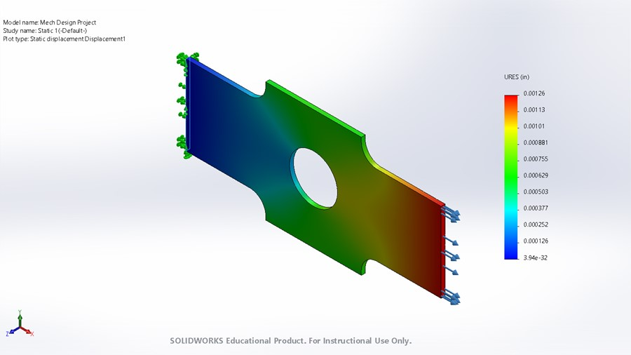
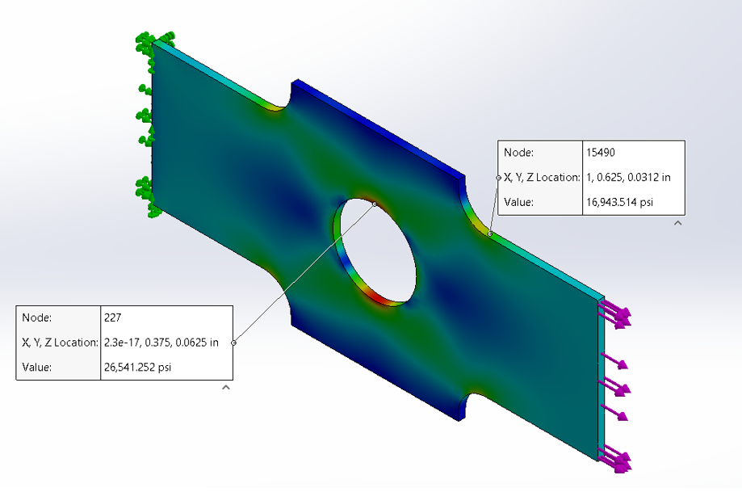
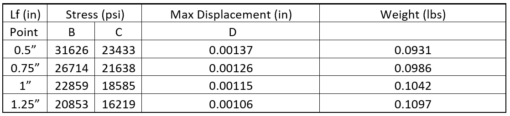
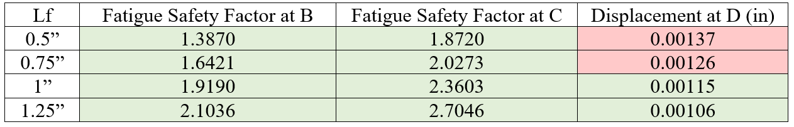

|
|
||
|---|---|---|
| The goal of this project was to redesign a linkage part for the given constraints. This part is created from either 1020 cold-rolled steel or 1045 cold-drawn steel and is subject to fatigue cycling. The 4 main constraints were a max displacement of 0.0012” at point D, a fatigue factor of safety at point B > 1.2, a fatigue factor of safety at point C > 1.2, and to minimize weight. The changing variable was the distance from the center of the part to the start of the fillet.  I created the linkage in Solidworks with the variable dimension Lf. The part dimensions are listed in the table below and are visible in the figure below. The final part model can be seen below.  I then created a static force simulation with the left face fixed and placed a force of 600 lb on the right face. The stress results from this simulation with points B and C labeled is attached below. I then repeated the static force simulation for each Lf and recorded the stress at points B and C.  Below are the results that I got from Solidworks. The max displacement in the linkage occurred at point D when Lf was 0.5”.  Point B and its respective point on the opposite side of the hole had the highest stress in the model and is the critical section for fatigue design.   The data obtained from Solidworks was then inputted to MATLAB. Using MATLAB, the mean and alternating stresses were calculated for each Lf. These stresses, along with the endurance stress and ultimate stress of the material, were plugged into the Goodman equation to solve for the fatigue safety factor. The fatigue safety factors for points B and C are listed below.  All of the Lf lengths passed our initial constraint that the fatigue safety factor for point B must be greater that 1.2. All the factors of safety at point C also passed the fatigue safety factor constraint. As for the displacement the parts with Lf of 0.5” and 0.75” deformed more than the allowed 0.0012” so I eliminated those from the final design. This left the 1” and 1.25” parts. Finally, I examined the weight in the parts. The 1” part weighted less than the 1.25” part. With all this information I chose the part with a Lf of 1”. |